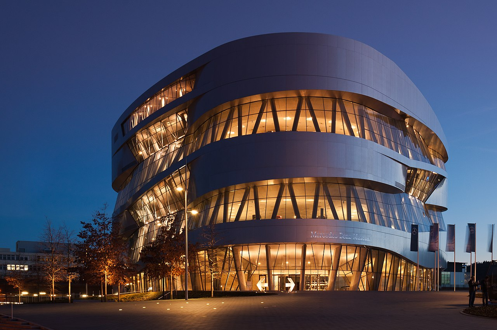

1. Një Vizitë në Muzeun Mercedes-Benz: Historia e Automobilizmit në Dore
Një nga eksperiencat më të paharrueshme gjatë vizitës time në Stuttgart ishte një vizitë në Muzeun Mercedes-Benz. Për ata që janë të pasionuar pas makinave, ky muze është një detyrë e domosdoshme. Kam kaluar orë të tëra duke eksploruar historinë e Mercedes-Benz, duke parë modele të hershme dhe duke kuptuar zhvillimin e industrisë automobilistike. Ajo që më pëlqeu ishte se muzeu nuk është vetëm për pasionantët e makinave, por është gjithashtu një ekspozitë mjaft edukative për të kuptuar ndikimin e kësaj industrie në botën moderne.
2. Shëtitja në Schlossgarten: Qetësi dhe Natyrë në Qendër të Qytetit

Pas një dite të ngarkuar me ekskursione kulturore, Schlossgarten ishte vendi ideal për të relaksuar. Ky park është një oazë e qetë dhe e bukur, duke ofruar një mundësi perfekte për një shëtitje pasditeje. Gjatë shëtitjes, mund të shihje njerëz që po relaksoheshin, po vraponin, dhe madje disa po bëjnë piknik në barin e gjelbër. Gjithashtu, ky park ofron pamje të mrekullueshme të kalasë, dhe ka shumë kënde të veçanta për të pushuar dhe shijuar natyrën.
3. Ushqimi dhe Pijet: Një Eksplorim i Shijeve të Stuttgartit
Si çdo qytet gjerman, Stuttgart ka një kulturë të fortë të ushqimit dhe pijes. Gjatë qëndrimit tim, nuk mund të humbja mundësinë për të provuar disa nga specialitetet lokale.
Një ndër pjatat që më bëri përshtypje ishte Spätzle, makarona tradicionale të shoqëruara me djathë dhe shumë erëza. Po ashtu, nuk mund të humbja mundësinë për të shijuar një birrë të freskët në një Biergarten, ku atmosfera ishte e ngrohtë dhe miqësore. Pija tradicionale gjermane dhe një tas i ngrohtë me ushqim të shijshëm përforcuan më shumë përshtypjen time pozitive për këtë qytet.
4. Teknologjia dhe Inovacioni: Një Vizitë në Muzeun Porsche
Stuttgart nuk është vetëm një qytet me histori dhe kulturë, por është gjithashtu një qendër e inovacionit dhe teknologjisë. Gjatë qëndrimit tim, vendosa të vizitoja Muzeun Porsche, një vend ku mund të shihja zhvillimin e automjeteve dhe të kuptoja më mirë historinë e kësaj kompanie legjendare. Për ata që janë të interesuar në inxhinierinë e automjeteve dhe teknologjinë, ky muze është një thesar i vërtetë.
5. Kulturë dhe Art: Opera e Stuttgartit
Një nga gjërat që më tërhoqi më shumë në Stuttgart ishte se ky qytet ofron mundësi të shkëlqyera për dashamirësit e artit. Gjatë qëndrimit tim, pata mundësinë të shijoj një shfaqje në Operën e Stuttgartit, një nga teatrot më prestigjioze të qytetit. Shfaqja ishte emocionuese dhe e mbushur me një atmosferë të veçantë. Akustika e sallës ishte perfekte dhe performanca e artistëve ishte e jashtëzakonshme.
Përfundim: Stuttgart - Një Qytet që Ma Shpërndau Mendjen
Vizita ime në Stuttgart ishte një përvojë që e vlerësoj shumë. Ky qytet, i mbushur me histori, kulturë, dhe teknologji, është një vend i mrekullueshëm për ata që duan të eksplorojnë, të relaksohen dhe të mësojnë. Ndonëse Stuttgart shpesh kalon nën hije të qyteteve të tjera të Gjermanisë, për mua është një nga destinacionet më të bukura dhe të pasura me mundësi.
Nëse jeni ndonjëherë në Gjermani, e rekomandoj fuqimisht një vizitë në Stuttgart - një qytet që ka diçka për të gjithë, dhe që do t’ju ofrojë një përvojë të paharrueshme.